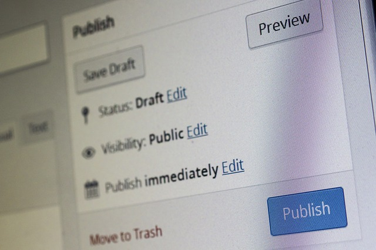

Do It! Google Slides: Create Your Own App
 The Challenge
The Challenge
Your challenge is to create your own app using Google Slides. You will create a homepage that features icons that, when clicked, will lead you to other slides. After visiting the other slides, you will create a homepage button for easy return.
Getting Started
- Log in to your Google Account and go to your Google Drive.
- On the left side of the screen at the top, click + NEW.
- On the drop-down menu, click Google Slides.
Project Steps
-
Ask
-
Imagine
-
Plan
-
Create
-
Test
-
Improve
Ask
You are starting to think about your app. Before you start designing or planning what your app will look like and include, think about these questions. While asking yourself these questions, think about if there is an app or piece of technology out now that could be improved with an update.
- What do I want the app to do?
- Who will use the app?
- What information needs to be included inside the app?
- Would it be possible for me to create a new app that meets the new/changing needs of people all in one app?
- What are the improvements and needs of the people today?
- What do people want most in an app or piece of technology?

Imagine
Narrow down all of your ideas to come up with a single idea of what you want your app to be. Why did you choose this solution over all of the other ones?
Plan
Start by working on the outline of your app layout. You can use this Design Process Sheet to brainstorm what each slide, or screen, will look like. Think about what you want your app to look like. On your framework outline, add notes about:
- Shapes you want to use
- Featured slides you want to include
- Images to use
- Videos or audios to include
Consider these questions:
- What is the purpose of your app? Why will other people want to use it?
- What will you name your app?
- What will you include in your additional slides, or screens?
- Will your app have one theme, or will each slide or screen have a different theme?
Create
During the create step of the engineering design process, you will create a prototype, or early sample, of your app in Google Slides.
- Resize your Presentation
For this particular project, it is important to set up the presentation and size it app like.
To resize the presentation to the correct dimensions,
- On the File tab, go to Page Setup.
- Click Custom in the pop-up window.
- Put in the dimensions 8 X 11.5 and make sure it is in inches. It should look like the image below.

- Create your Homepage
- Add a background or theme.
- Add a title for your app.
- Add additional new slides based on how many featured slides you want to add.
- Add Shapes With Text
- Add shapes to your homepage.
- For each shape, add a word or phrase that tells what the linking page will be about. These will become your icons.
- Design Additional Slides
Design your additional slides. Give each slide the following:
- Title
- Images/video/audio
- Short story or article
- Background
- On each slide, in one of the bottom corners, add the word “homepage.”
- Link Your Homepage Icons to Other Slides
Follow the steps in How to Use Google Slides? under Linking Shapes to Other Slides. Link the text in each shape/icon on the homepage to the slide that it goes with.
On the additional slides, where you added the word ‘homepage’ in the bottom corner, follow the same directions to link the word back to slide number 1.

Test
How will you know whether your app works or not? Gather a few friends and family members and have them try out your app. Make sure they try out all of the links and look at all of the pages/slides. This is important because you want to make sure that everything is working correctly, that it is readable, and that it shows up the way you want it to. Is your app effective? Does it meet the needs of someone using it?
When others are testing your app, ask each one of them these questions:
- Can you see my text clearly?
- Are any of my images cut off or placed in an odd position?
- Click on every link. They should take you to another slide. Do they all work correctly? Do they take you to the slide they say they are labeled for?
- Is there any information that is incorrect or that I need to add?
Improve
Take any and all feedback from the test step and make improvements to your app. Please remember to write down any changes that are made.